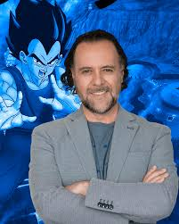

| RENE GARCIA | |
|  | Biografía
René García es un actor y locutor mexicano que ha ejercido el doblaje por más de 10 años. René es conocido en Latinoamérica por haberle dado voz a Vegeta, personaje de la longeva caricatura Dragon Ball. Asimismo, prestó su voz para el personaje de Stewie en Padre de Familia. Rene es una de las voces más conocidas en México gracias también a que, usualmente, presta su voz para los personajes de actores de habla inglesa como Ben Affleck, Keanu Reeves, Chris O'Donnell, John Travolta, Rob Lowe, Hugh Grant, entre otros. Como actor ha participado en diversas producciones televisivas como La semilla de la vida, El sexo débil, El octavo mandamiento, La impostora (2014), La doña (2016) y muchas otras más. Como locutor ha sido la voz institucional de algunas marcas y, además, tiene el crédito de la radionovela Amarga Ciudad, en la XEW. René también ha participado como locutor de La hora nacional. |